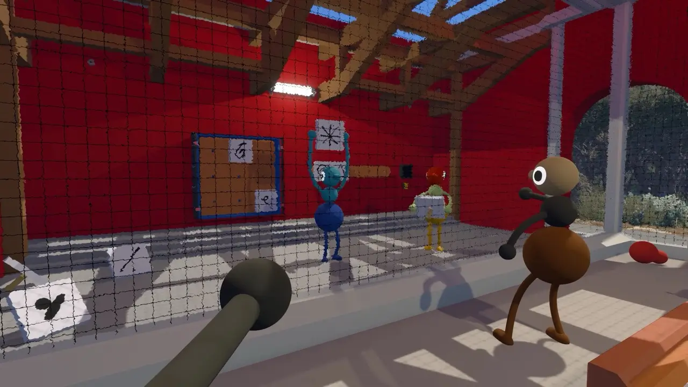

Quick answer: Progress through the opening Drawbridge route, then the Red Tower objectives to reach the Map Room. Until then, navigate by large colored towers and the Train Station.

How to reach the Map Room
The Map Room is not your starting tool. Treat unlocking it as part of early progression: clear the opening area, cross the Drawbridge and continue through the Red Tower route.
Best landmarks
| Landmark | Why it matters |
|---|---|
| Drawbridge | The boundary between the opening lesson and the wider island. |
| Train Station | A memorable rally point when your team splits up. |
| Colored towers | Large distant markers that organize puzzle routes. |
| Map Room | Connects names, routes and the island’s larger geography. |
How to use the map
Agree on a shared vocabulary. Call out the nearest tower color, terrain type and one unique structure. “Below Red Tower, beside the yellow maze” is far more useful than “over here.”
Map size
The useful question is not a square-mile figure; it is how quickly your group can create reliable routes. Big Walk’s spaces are designed around separation, voice range and rediscovery, so perceived size changes with familiarity.
Puzzle locations
Use the puzzle index to follow Drawbridge, Red Tower, Green Tower and later tower routes.